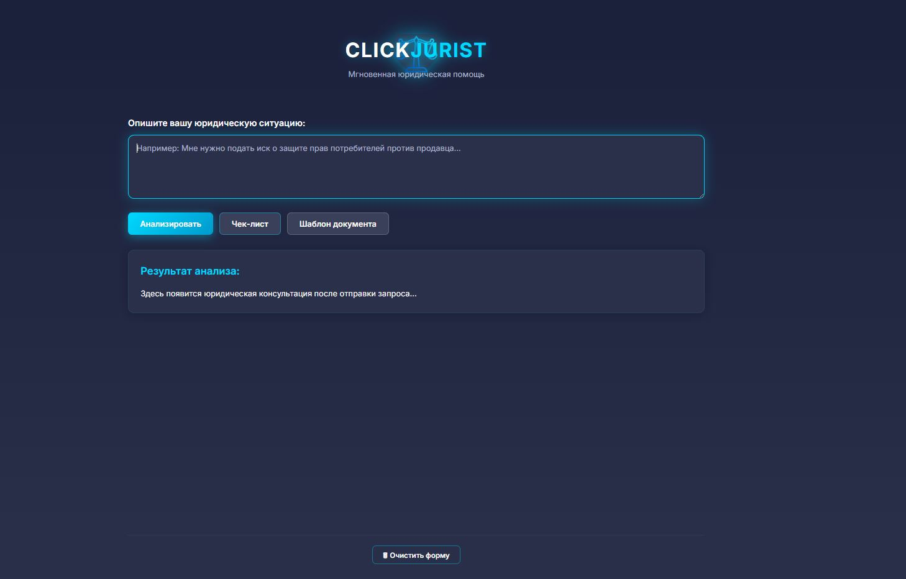
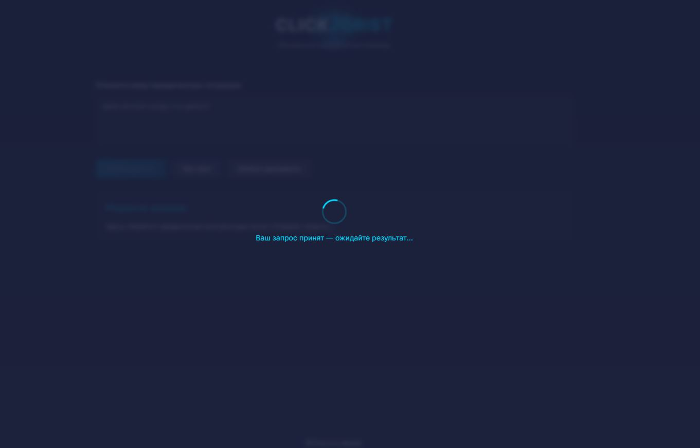
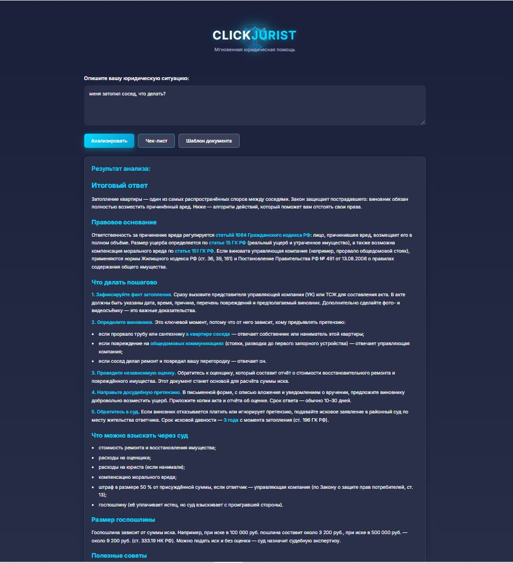
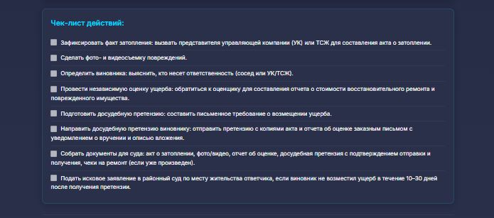
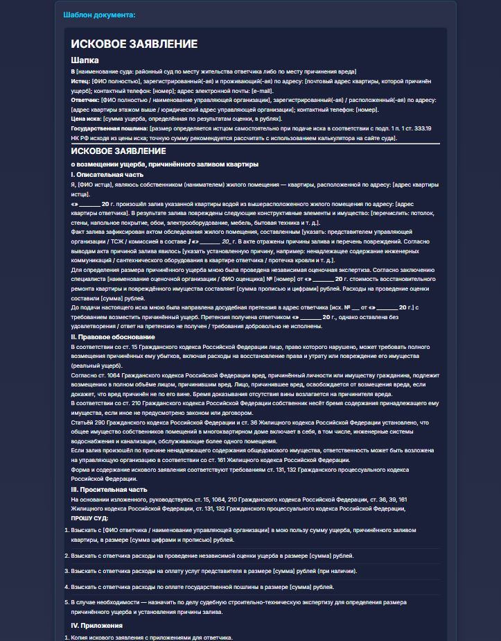
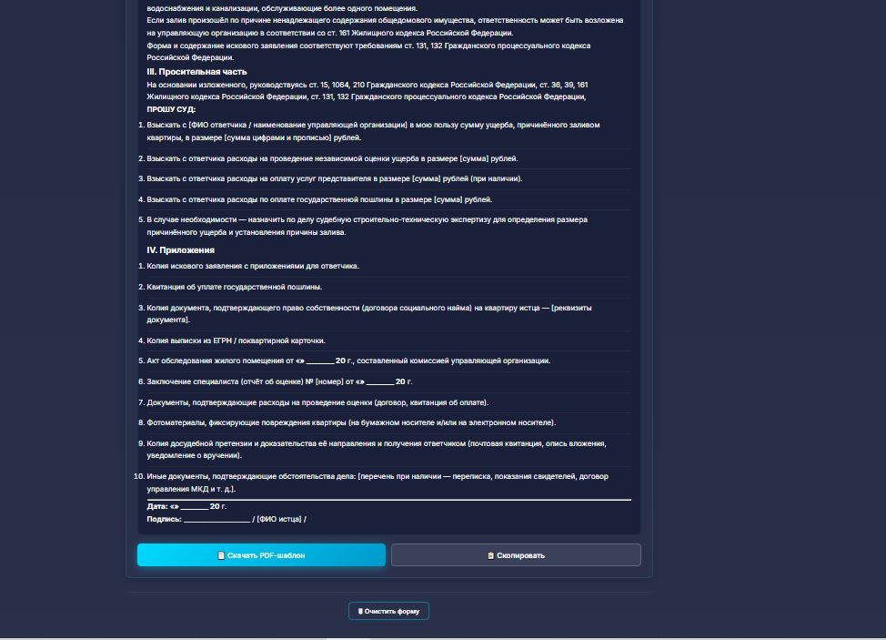
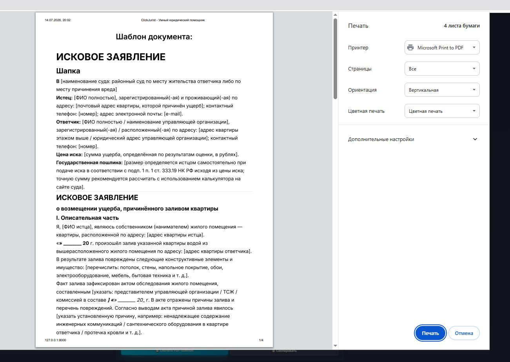

Умный юридический помощник на базе двухэтапного LLM-пайплайна
Юридическая консультация «по-человечески» и в шаблонах документов — это две разные задачи. Один ИИ-сервис редко справляется с обеими сразу и качественно.
Люди ищут ответ часами: юристы, форумы, законы. Срочные ситуации не ждут.
Первичная консультация юриста — от 2000 ₽. Не каждый готов платить за «а вдруг пригодится».
Составить иск, претензию или жалобу без опыта — пугает шапкой, реквизитами и ссылками на статьи.
Сделать «карманного юриста», который бесплатно выдаёт юридически грамотную консультацию и при необходимости сразу формирует рабочий шаблон документа.
Продемонстрировать применение LLM в production-задаче: двухэтапный конвейер, маршрутизация между моделями, контроль качества и токенной экономии.
Клиент-серверное приложение: FastAPI на бэкенде, vanilla-JS на фронтенде, два независимых вызова LLM через провайдера AITUNNEL.
HTML + CSS + JS. Без сборщиков и фреймворков — максимально «прозрачно» для проверки.
FastAPI · Pydantic · StaticFiles. 3 эндпоинта: /api/generate, /api/checklist, /api/document.
Официальный OpenAI-совместимый API AITUNNEL. Две модели: gemini-2.5-flash и minimax-m3.
Главное техническое решение проекта. Один запрос пользователя проходит через две независимые LLM, что снижает риск галлюцинаций и «воды».
Системный промпт: «Ты — квалифицированный юрист РФ». T=0.2, ≤ 150 слов, кириллица, без выдуманных статей и ФИО.
Системный промпт: «Ты — Senior-асессор». Делает 5 внутренних проверок, но в ответе показывает только шаг 5.
| Критерий | LLM-1 (черновик) | LLM-2 (асессор) |
|---|---|---|
| Модель | gemini-2.5-flash | minimax-m3 |
| Скорость | ⚡ 5–15 c | 🐢 30–90 c (reasoning) |
| Стоимость | 💰 низкая | 💰💰 средняя |
| Сильная сторона | быстрые черновики, чек-листы | глубокий анализ, итоговая сборка |
| Роль в пайплайне | «разведка» + простые задачи | «эксперт-асессор» |
Три системных промпта, каждый со своей ролью и жёсткими правилами. Это «программный код» проекта, написанный на естественном языке.
# LLM-1: юрист-консультант Роль: квалифицированный юрист РФ Задача: правовой анализ + консультация База: Конституция, ГК/УК/ТК РФ, актуальные редакции, практика ВС РФ Жёсткие правила: - Не придумывай номера дел, суммы, пошлины - Не выдумывай статьи: пиши «[соответствующая норма]» - Объём ≤ 150 слов, кириллица, анонимность - Если данных не хватает — задай 1–2 уточняющих вопроса # LLM-2: асессор Внутренние шаги: нормативная база → практика → расчёты → анти-вода → сборка В ОТВЕТ ВЫВОДИТЬ ТОЛЬКО: ## Итоговый ответ <далее текст консультации 400–700 слов> # Чек-лист / шаблон документа — свои промпты, оба завязаны на финал LLM-2
LLM-асессор нужен не «для красоты» — он ловит конкретные классы ошибок LLM-1.
Асессор видит, что LLM-1 сослался на «ст. 14.7 КоАП РФ», и в финале либо подтверждает, либо заменяет плейсхолдером.
Фразы-паразиты, дисклеймеры, повтор вопроса — отсекаются на шаге 4 асессора.
Сроки исковой давности, уведомлений, претензионного порядка — проверяются на шаге 3.
Жёсткое правило в обоих промптах: «только кириллица, никакой латиницы».
_strip_to_final_answer() в llm_chain.py — даже если LLM-2 просочит служебные шаги 1–4, фронтенд получит только блок от ## Итоговый ответ.
Язык бэкенда
HTTP-сервер + автодокументация
ASGI-сервер
Валидация моделей запросов/ответов
Фронтенд без сборщиков
Тёмная неоновая тема, без Tailwind
Markdown → HTML на клиенте
Генерация PDF с кириллицей
OpenAI-совместимый шлюз LLM
Безопасное хранение ключей
HTTP-клиент к провайдеру
Окружение разработки
Структурированный ответ 400–700 слов по законодательству РФ. Со ссылками на нормы, но без выдумок.
5–10 конкретных шагов: что подготовить, куда подать, в какой срок. Генерируется по кнопке.
Исковое заявление, претензия или жалоба — с правильной шапкой, обоснованием и приложениями.
Системный диалог печати → «Сохранить как PDF». Кириллица настроена через ReportLab.
Один клик — и консультация или шаблон в буфере обмена. С подтверждением «✓ Скопировано».
Одна кнопка сбрасывает всё: ввод, результаты, чек-лист, шаблон — для нового вопроса.
Проект делался итерациями: от проверки доступа к LLM до финального UX-дизайна.
Документация, проверка авторизации, тестовые запросы, выбор моделей. test_aitunnel.py.
Скелет бэкенда, эндпоинты /api/generate, статика, базовая HTML-форма.
Три промпта: юрист, асессор, чек-лист. Эмпирический подбор temperature и max_tokens.
Стриппинг ## Итоговый ответ, ретраи на пустой content, fallback на черновик LLM-1.
Эндпоинт /api/document с типами isk/pretension/zhaloba, генерация PDF через ReportLab с кириллицей.
Лоадер «Ваш запрос принят», кнопки копирования, очистка формы, адаптивная вёрстка.
| Проблема | Решение |
|---|---|
Таймаут minimax-m3 при max_tokens=50000 |
Снизили до 8000 (≈ 30 000 символов — хватает). Управляется через .env. |
Провайдер возвращает content: null при перегрузке |
Ретраи с задержкой 5 с (RETRY_ON_NULL=2) + таймаут 600 с на запрос. |
| Кириллица в PDF — «крякозябры» | Регистрация TTF-шрифта FreeSans в ReportLab; fallback на DejaVuSans. |
| Модель выводит служебные шаги 1–4 асессора | Жёсткое правило в промпте + страховочный _strip_to_final_answer() в коде. |
PowerShell 5.x не поддерживает && |
Используем ;, $HOME и $PSVersionTable.PSVersion для проверки окружения. |
Кириллические пути ломают cd |
Все пути в .env и в коде — относительные или ASCII-совместимые. |
Семь ключевых кадров разбиты на 3 страницы — на каждой от 1 до 2 скриншотов в полный размер, чтобы всё было читаемо. Переключайте кнопками 1 2 3 или ←/→.







LLM в production — это не «магический чёрный ящик», а инженерная дисциплина: выбор моделей под задачу, продуманные промпты, защита от галлюцинаций, экономия токенов и UX, понятный человеку без юридического образования.